- 00000018WIA30524B30GYZ
- id_241010291.3
- Jul 5, 2019 11:45:12 AM
Fixed Table Planned Maintenance
Fixed Table PM is scheduled 4 times a year. Refer to the following matrix for Fixed Table Planned Maintenance.
| Procedure | Type | Period | |||
| A | B | C | D | ||
| CHECK EMERGENCY RELEASE OF CRADLE AND PATIENT TRANSPORT | 1 | X | X | X | X |
| HOME SENSOR FUNCTION CHECK | 1 | X | X | X | X |
| CHECK FOR ACTUATOR PLASTIC BRACKET DISENGAGEMENT FROM SENSOR ROD | 1 | X | X | X | X |
| CHECK FOR GREASE AT ACTUATOR ROD | 1 | X | X | X | X |
| DOCK CENTERING | 3 | X | X | X | X |
| PATIENT TRANSPORT TOP HEIGHT CHECK | 3 | X | X | X | X |
| CONNECTING ROD CHECK | 3 | X | X | X | X |
| CLEANING OF LIGHTWEIGHT CRADLE WHEELS | 3 | X | X | ||
| VISUAL CHECKS | 3 | X | |||
| CRADLE SIDE LOCK ADJUSTMENT | 3 | X | |||
-
TYPE 1 - SAFETY AND REGULATORY
-
TYPE 2 - IMAGE QUALITY
-
TYPE 3 - OTHER
CHECK EMERGENCY RELEASE OF CRADLE AND PATIENT TRANSPORT
-
Press Cradle in button on the Gantry, Take cradle in by 500mm approximately. Rotate the Handle on the Cradle, and pull the cradle out to the home position. Ensure its possible to pull the cradle with this process.
Figure 1. Emergency egress Check 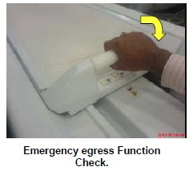
-
If cradle fails to release, repair cradle immediately. Refer to CRADLE EMERGENCY RELEASE CHECK AND ADJUSTMENT.
HOME SENSOR FUNCTION CHECK
-
Press Cradle in button on the Gantry, Take cradle in by 500mm approximately. Press the Down pedal on the Dock FRP cover. Ensure that the table is not coming down.
Figure 2. Home sensor Function Check 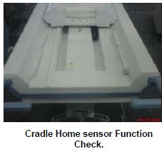
-
If Home sensor is not functioning, Repair Home sensor immediately. Refer to CRADLE HOME SENSOR CHECK.
CHECK FOR ACTUATOR PLASTIC BRACKET DISENGAGEMENT FROM SENSOR ROD
-
Remove scissor covers, refer to scissor cover removal procedure.
-
Check for Actuator plastic bracket disengagement from sensor rod, if it is disengaged replace the actuator, refer to table electrical actuator replacement procedure.
Figure 3. Check for Actuator plastic bracket 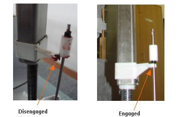
CHECK FOR GREASE AT ACTUATOR ROD
-
Check for the presence of grease at rod, if grease is present do not apply, in case if the grease is dried out then apply grease to rod. (Grease specification: MOBILTEMP SHC 32 14 OZ CARTRIDGE, GE Part# 46-256047P1)
Figure 4. Check on the rod 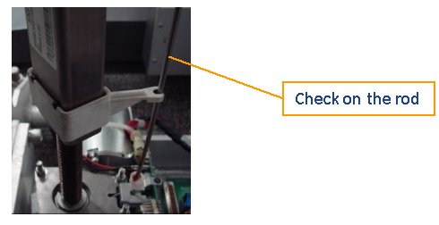
DOCK CENTERING
-
Raise patient transport to maximum height using UP pedal.
-
Verify the table is centered by aligning the table edge line and bridge edge line. Check that Cradle moves smoothly.
Note:If not centered, measure the offset of the Table by checking the line of Bridge and Table and record it.
-
Check that the gaps of bridge and table are 0.75 inches +/- 0.25 (19.0 +/- 6.4 mm).
Note:If the gap does not satisfy the specification, record the adjustment value for each side.
Figure 5. 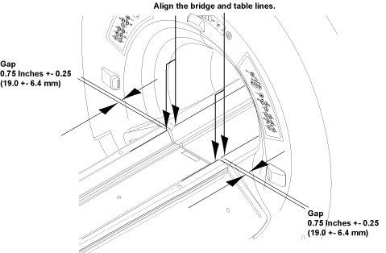
-
If adjustment is required, refer to the following procedure.
-
Table Center Adjustment: Table Center Adjustment.
-
Table Gap Adjustment: Table Gap Adjustment
-
PATIENT TRANSPORT TOP HEIGHT CHECK
-
Raise patient transport to maximum height using UP pedal.
-
Check alignment of Patient table Top against the bridge. Guide ridge (cradle rolling area) of Tabletop should match guide ridge (cradle rolling area) of bridge (Up- Down Height).
Figure 6. Measure the height difference 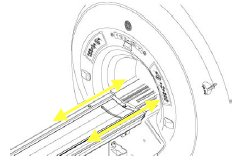
-
If adjustment is required, refer to TOP HEIGHT ADJUSTMENT .
CONNECTING ROD CHECK
-
Move the cradle inside the bore until free from the side guards (400mm - 450mm).
-
Release the cradle from the LPCA.
Figure 7. Release Cradle 
-
Place the thin foam underneath the cradle front to prevent bridge and cradle from scratching.
-
Lift the cradle at the handle by 1 hand and use the other hand to insert the foam.
Figure 8. Insert Foams  Note:
Note:Foam is stored in the Card during installation.
Figure 9. Foam Location 
-
Check if connecting rod had come out in front cradle section, if it had come out push it back.
Figure 10. Connecting Rod 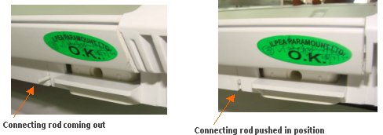
-
Restore the cradle.
CLEANING OF LIGHTWEIGHT CRADLE WHEELS
-
Remove table cradle and turn over on its back. Refer to Express Coil: Posterior Array Coil Replacement without removing Fixed Table for removal of cradle.
-
Using a flathead screwdriver, lift out each cradle wheel.
Figure 11. Pull up wheels 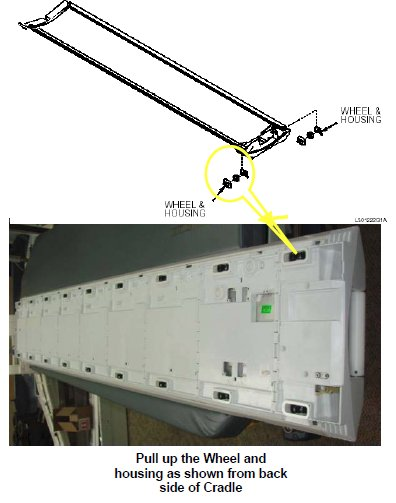
-
Disassembly wheels.
Figure 12. Disassembly wheels 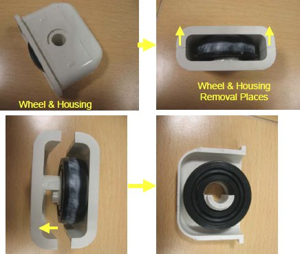
-
Check for any damages, wear and tear of wheels.
Figure 13. Check for any damages 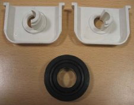
-
Change and replace the wheels if the wheels are damaged.
-
Assemble Housing and Wheel.
Figure 14. Assemble Housing and Wheel 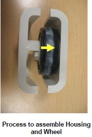
-
Assembly the Wheel and housing back the Cradle assembly.
Figure 15. Back the Cradle assembly 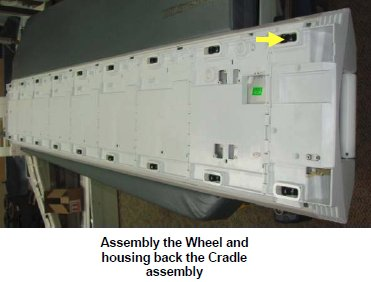
-
Repeat the above process for all 18 no’s wheel assemblies.
-
Restore cradle. Refer to Cradle Assembly procedure:.
-
Perform MCQA test to check the cable connection and operation of PA coil.
VISUAL CHECKS
-
Check for Table Up/Down Table stickers. If any damage, replace the stickers.
Figure 16. Table UP/Down Stickers 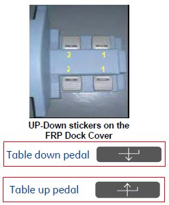
-
Check for Table Top Front End, Foot End and Side bumpers Damage, If any damage, replace the Bumpers by referring to TABLE TOP FOOT END BUMPER , TABLE TOP HEAD END BUMPER , or TABLE TOP SIDE BUMPER
Figure 17. Table Top Bumpers check 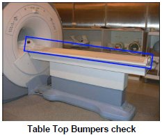
-
Check for Table FRP and Dock FRP covers Damage, If any damage, replace the FRP Covers by referring to FRP Covers.
Figure 18. Table FRP and FRP Dock Covers Check 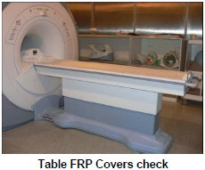
CRADLE SIDE LOCK ADJUSTMENT
-
Press the table down pedal on the FRP Dock cover; take the table to the down by approximately 100mm.
Figure 19. Press Down pedal 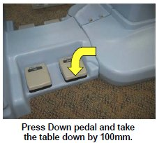
-
Check for the proper latching of the cradle in the Table delrin guide by moving cradle in shown direction.
Figure 20. Check for the proper latching of the cradle 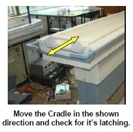
-
If the cradle is not latching properly, readjust it by referring toCRADLE SLIDE LOCK ADJUSTMENT
-
If the cradle is latching properly, but a play of >3mm observed, then the cradle Side Delrin guide needs to be readjusted. Refer to CRADLE GUIDE RAIL LATCH ADJUSTMENT for adjustment.